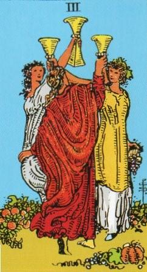
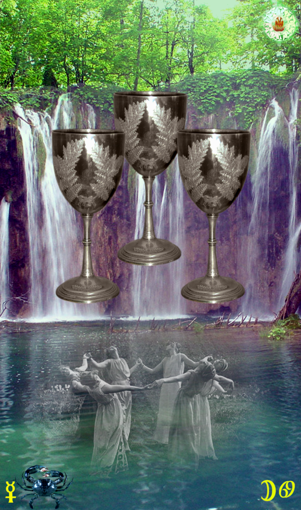
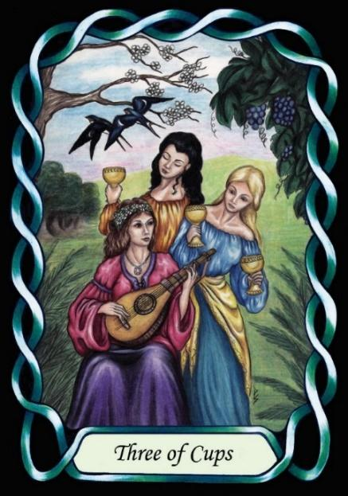

Three of Cups



Sign |
|
Fourth: Home |
|
Sign Ruler |
|
Element |
Water - emotions |
Modality |
|
Symbol |
Crab |
Decan |
|
Decan Ruler |
|
Time |
Jul 2 - 12 |
Unconventional Cancer II
A Journeyman in home life, influenced by Moon and Mercury, uses intelligence to produce a happy home life. They understand the traps that ensnare people in normal life, and so will arrange their lives for happy emotions, regardless of the rules of society. This will make their choice of lifestyle somewhat unusual.
Goldschneider Personology
People born in this week often live in extreme or fringe subcultures, if they are fortunate enough to find others who think as they do. Otherwise, they are loners. They have difficulty explaining their view of life as it is primarily emotionally driven, and are often attracted to the unusual, especially in terms of sight and sound.
RWS Imagery
Three women dance together and raise Cups in a field of nature. This is reminiscent of unconventional cancers that are drawn to female secrets, nature and fertility practices, as but one example of their unconventionality.
Pymander Interpretation
A coven of women (witches) dances in a circle. The passion of Cancer puts its denizens in touch with their intuitive feminine side, and moves them away from patriarchy. This card indicates strong feelings leading to a life-style that is not main-stream.
Summary
Unconventional Joy